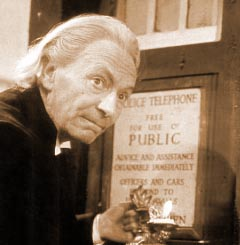

|  | The First Doctor is the initial incarnation of the protagonist of the long-running BBC television science fiction series Doctor Who. He was portrayed by the actor William Hartnell from 1963 to 1966. Hartnell reprised the role in the tenth anniversary story The Three Doctors in 1973 - albeit in a reduced capacity due to his ailing health. Hartnell's Doctor is the Doctor's "original" form. The regeneration plot device was introduced when Hartnell needed to leave the series, and consequently has extended the life of the show for many years. The First Doctor is the youngest incarnation of the Doctor, but has the most aged physical appearance. |